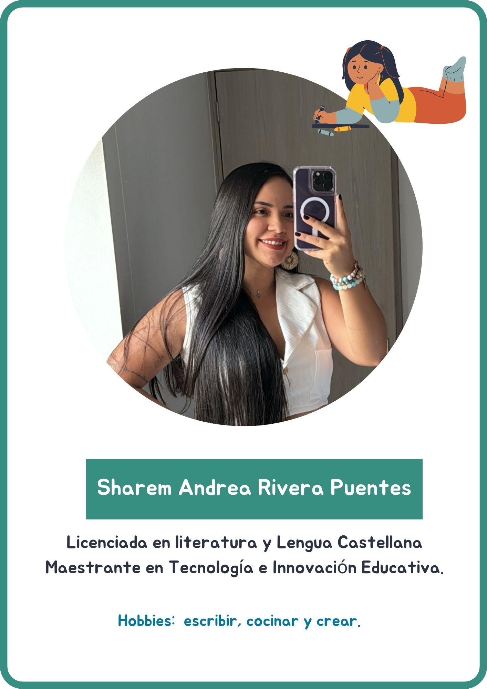

¡Bienvenidos a la revolución del aprendizaje!
La revolución de la Brújula Mágica 🧭
Inicio
Conoce a los personajes de esta gran aventura
Personajes - La brújula mágica de Andrea Rivera Puentes
El equipo detrás del aprendizaje

Obra publicada con Licencia Creative Commons Reconocimiento Compartir igual 4.0